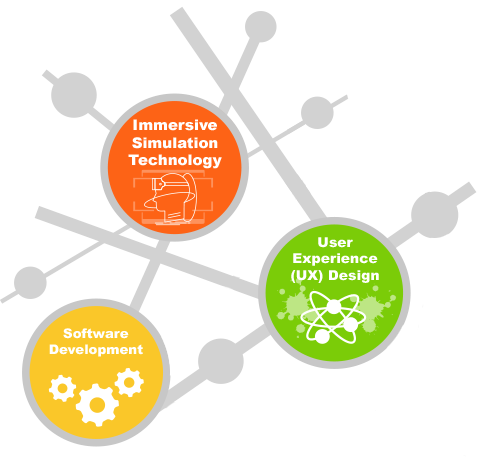

Home
SP Experience
Course Details
Past Experience
Feedback
Course Details
More about Diploma in Information Technology (DIT) and where it can lead you
Diploma in Information Technology
If you enjoying programming or building websites, this it the path for you! Diploma in Information Technology(DIT) is a course focused on Software and Application development. And as student of DIT, you won't only learn programming, but also problem-solving and communication skills.
You'll be able to choose based on your interest from one of the three available specialist tracks in your second year, Software Development, User Experience(UX) Design or Immersive Simulation.
The section below shows a brief explanation of the modules i am currently taking as a first year student in DIT.

Fundamentals Of Programming
This module teaches you the fundamentals of Javascript, from logic to classes! Expect yourself to be able to script our your own little program after completing this module.>
Fundamentals Of Computing
Fundamentals of Computing is a module that teaches you how computers work internally, how to convert from binary to decimals, and even scratches the surface of networking devices!>
Front-End Web Development
If you enjoy building websites from scratch, you'll enjoy this module. With HTML, CSS and even Bootstrap, you'll be able to build your very own website from scratch such as the one you're viewing now.
Critical and Analytical Thinking
Critical and Analytical Thinking trains you to analyze and research on your sources accurately before we start believing whatever we read or hear online. It's important not to spread 'fake news' around without knowing the facts.
Communication (Project Effectiveness)
If you're coming from your O' or A' levels, this might be something new to you. This module teaches us how to write proposals, report, present and cite our sources accurately! The skills you will need throughout your life.
Mathematics
Math. You either love it or hate it. This module aims to equip you with knowledge in mathematics and analytical skills to solve problems related to information technology. From Matrices to even Probabilities.
Career Prospect
With 3 specialisations in SoC’s DIT, there are many career prospects for aspiring SoC diploma holders. From Artificial Intelligence to UI/UX Design, deep-dive into where your heart lies in the world of technology in your 2nd year of DIT. Here's some insight of the many careers you can expect to pursue after you graduate:
Games Programmer
Applications Developer
Software Engineer
UI/UX Designer
Web Developer
CONTACTS
Singapore Polytechnic, 500 Dover Road, Singapore
contactus@sp.edu.sg (+65)6775 1133
@ ALL RIGHTS RESERVED | THE SP EXPERIENCE | SINGAPORE POLYTECHNIC